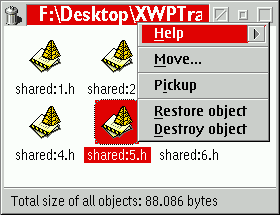

Die meisten werden wahrscheinlich mit dieser Funktion vertraut sein, da MacOS, Windows 95 und KDE (auf Linux) diese Funktion auch besitzen. Grundsätzlich speichert der Papierkorb alle im System gelöschten Objekte temporär, so daß Sie sie zurückbekommen können, falls Sie einmal etwas unbeachsichtigt gelöscht haben, indem Sie den Papierkorb (der sich wie jeder Ordner verhält) öffnen und ein Objekt wiederherstellen.
Mit &xwp; fängt der Papierkorb alle Löschoperationen der WPS ab. (Er fängt
keine Operationen von der Befehlszeile oder die &os2; DELDIR-Einstellung ab.)
Hinweis: Der Papierkorb wird bei der Installation nicht automatisch erstellt, und die Unterstützung des Papierkorbs für Löschoperationen ist anfangs deaktiviert, um Verwirrung zu vermeiden. Damit der Papierkorb funktioniert, müssen Sie ihn auf der Seite "Funktionalität" des Objektes "&xwp;-Konfiguration" aktivieren.
Das Löschen eines Objektes in den Papierkorb kann auf zweifache Weise vorgenommen werden:
Sie können immer noch einen "echten" Löschvorgang (d.h. das Objekt wird wirklich gelöscht, anstatt es in den Papierkorb zu verschieben) durchführen, indem Sie die Umschalttaste gedrückt halten, während Sie auf den Menüeintrag "Löschen" im Kontextmenü eines Objektes klicken oder die Taste "Entf" drücken.

Wenn sich Objekte darin befinden, erhält das Papierkorb-Objekt selbst zudem einen zusätzlichen Menüeintrag namens "Papierkorb ausleeren", der sämtliche Objekte, die sich im Papierkorb befinden, endgültig löscht.
Das Einstellungsnotizbuch des Papierkorbs besitzt eine neue Einstellungsseite mit zusätzlichen Funktionen. Wählen Sie auf dieser Seite "Hilfe", um weitere Informationen aufzurufen.
Wenn Sie an Details dazu interessiert sind, wie der Papierkorb intern funktioniert, lesen Sie
bitte die entsprechende Seite im Abschnitt "&xwp;-Interna".